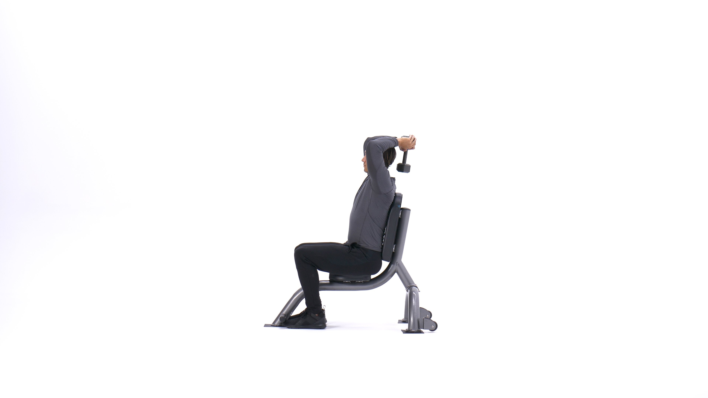

Seated Triceps Press
The seated triceps press is a popular arm-building exercise that targets the triceps with a single dumbbell held by both hands, extending it up behind your head. While you can go surprisingly heavy on this movement, it is usually performed for moderate to high reps, such as 8-12 reps per set or more, as part of the upper-body or arm-focused portion of a workout. If you're going heavy, having someone help get the weight into position is a good idea.
Exercise Instructions
1. Sit down on a bench with back support and grasp a dumbbell with both hands and hold it overhead at arm's length. >Tip: a better way is to have somebody hand it to you especially if it is very heavy. The resistance should be resting in the palms of your hands with your thumbs around it. The palm of the hand should be facing inward. This will be your starting position.
2. Keeping your upper arms close to your head (elbows in) and perpendicular to the floor, lower the resistance in a semi-circular motion behind your head until your forearms touch your biceps. Tip: The upper arms should remain stationary and only the forearms should move. Breathe in as you perform this step.
3. Go back to the starting position by using the triceps to raise the dumbbell. Breathe out as you perform this step.
4. Repeat for the recommended amount of repetitions.
Variations: You can perform this exercise standing as well but this puts strain on your back especially if you are using heavy dumbbells like 95 lbs or so.
Another variation is to use an EZ or straight bar instead in which case you will be holding the bar from the inside (around 5 inches between both hands) with the palms facing forward (pronated grip).
There is also a bar that has parallel bars inside (often referred to as a triceps blaster) and this can also be used for this exercise.
Finally, a low pulley cable with a rope attachment or bar (straight or EZ) attachment at the end can be used for variety purposes as well.
Exercise Benefits
1. Builds stronger and bigger triceps.
2. Great way to target the long head of the triceps.
3. Can go heavier than other triceps isolation movements.
4. Performing this move seated eliminates any balance challenge and allows you to focus on the triceps
Exercise Examples
This is the Tricep Press in the down position.
This is the Tricep Press in the up position.